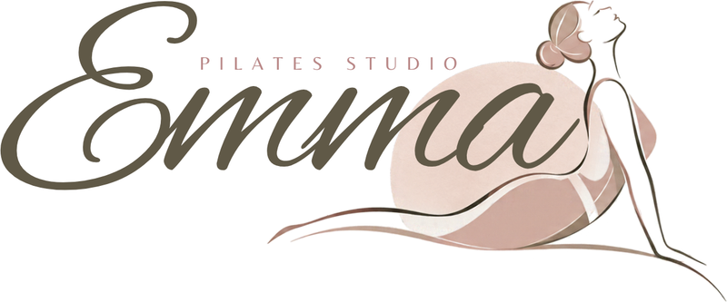

Pantalla partida: a la izquierda el logo del estudio, en color, sobre Rosa tinte; a la derecha el formulario sobre Marfil, sin tarjeta.

Pantalla partida: a la izquierda el bloque Rosa profundo con «Emma Pilates Studio» en letras blancas; a la derecha el formulario.
La tarjeta de hoy, pero que se ve: página Rosa tinte, tarjeta Marfil con sombra suave y el logo arriba.
| A · Panel con el logo | B · Bloque fuerte | C · Tarjeta que se ve | |
|---|---|---|---|
| Cuánto se destaca | Mucho: la mitad de la pantalla es de marca | Lo más fuerte: el bloque oscuro se ve de lejos | Bien: la tarjeta clara sobre rosa ya no se pierde |
| El logo | El logo real, grande y en color | Solo el nombre en letras (el logo no se lee sobre el rosa oscuro) | El logo real, más chico, dentro de la tarjeta |
| En el celular (420) | Una franja con el logo arriba y el formulario debajo | Una franja oscura con el nombre arriba | Igual que hoy: una tarjeta con márgenes |
| Cambio en el código | Medio: nuevo marco con dos columnas | Medio: el mismo marco que A | Poco: cambian colores, sombra y el logo |
| Riesgo | Bajo | El rosa oscuro ocupa casi media pantalla; puede sentirse pesado al entrar todos los días | Se parece mucho a la pantalla de hoy |
Recomendada: A. Usa el logo real del estudio, grande y en color, y separa la marca del formulario sin oscurecer la pantalla. B es la más llamativa pero no puede mostrar el logo; C es la más rápida de hacer pero se parece a lo que hoy no te gusta.